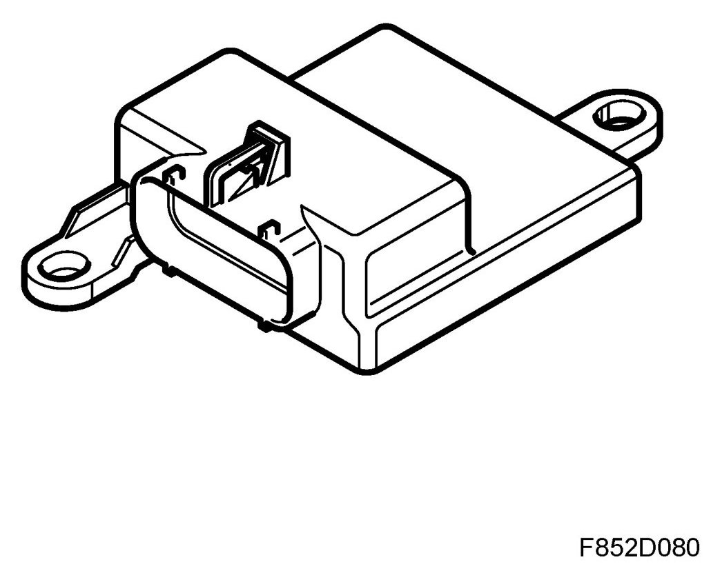
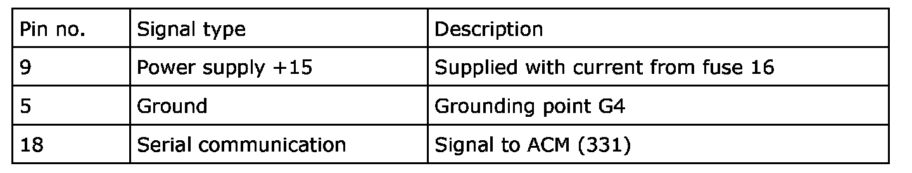
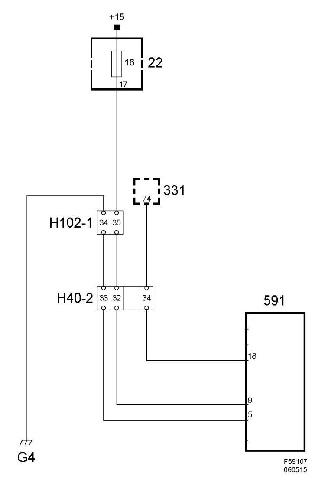

Control Module, PPS (591)
Control Module, PPS (591)
Location
Control module, PPS (591)

Main task
The control module governs the indicator lamps, passenger airbag/side airbag ON/OFF, and monitors all the component parts in the system. The values are filtered through a calculation algorithm in the control module that takes into account pressure, tension and temperature and the weight can be calculated.
Type
The control module contains a microprocessor, ROM and EEPROM. The control module sends information via a serial communication cable to ACM (331).
Connect
Power supply, ground and bus communication

Wiring diagram, power supply
